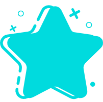
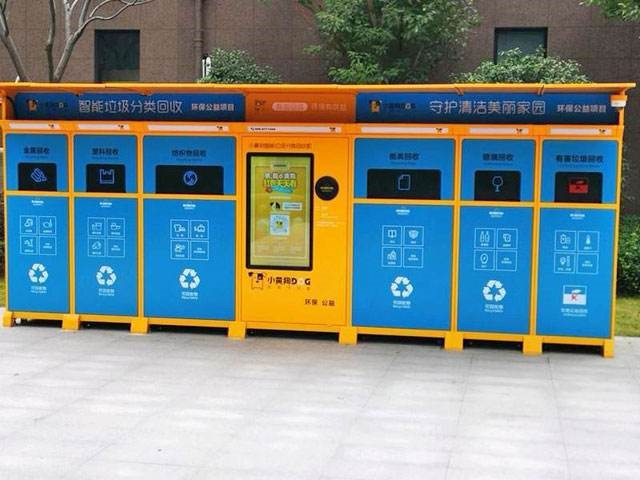
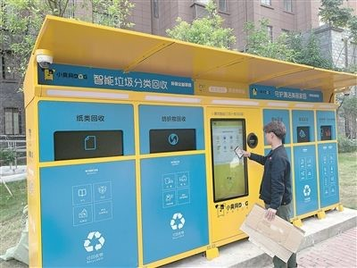

Trash entry
Our team contacted a company about waste recycling. Here, we give a brief introduction to the company. Beijing Jinghuan intelligent environmental protection technology co., LTD., an Internet enterprise under Beijing sanitation group, is engaged in waste resource utilization and waste classification information platform operation. They set up environmental recycling bins in communities, institutions and schools to build a network of urban waste sorting, recycling and transportation to solve the problem of city-level sorting and disposal, and ensure the supply of renewable resource materials. At the same time, based on the city classification and recycling network system of renewable resources, Jinghuan company has established a community comprehensive interactive service platform.
Before visiting the cooperative community of Jinghuan company, we came to the headquarters of the company in September to discuss the current situation of garbage disposal in China and how to solve the problem of garbage disposal with different forces.
Waste separation in China is still in the growth stage, and waste disposal is a large project with high investment, which needs the strength from all aspects. From the social sector, the company is developing more equipment for waste separation and treatment.From the perspective of education, researchers are exploring more theoretical mechanisms for garbage decomposition and recycling. In addition, our team introduced to them our project -- biodegradation of plastics, which has great practical significance for waste disposal. Our team discussed how to combine our research projects with the company's smart devices with the head of science and technology of jinghuan company. They expressed great interest in it, saying that if our project can be successfully marketed, it will effectively improve the situation of garbage pollution. We will further strengthen cooperation.
When we asked them what supported the cause of environmental protection in China, they said it was "love". It was their first step that led to the thousands of steps that followed.


Our team came to the cooperation community of Jinghuan company in early October and communicated with the project leader of practice department. The project leader introduced to us the working principle of his company's garbage sorting and recycling smart box. "Smart box" combines garbage sorting with smart CARDS, which can help people form a good habit of garbage sorting. Because there are weight sensors at the bottom that convert the amount of trash people put into a number, the smart card gets points every time. Moreover, these points can be converted into substantial goods, such as rice, flour, shopping vouchers and so on. It is a smart waste recycling bin based on the reward system.
 Our team came to the cooperation community of Jinghuan company in early October and communicated with the project leader of practice department. The project leader introduced to us the working principle of his company's garbage sorting and recycling smart box. "Smart box" combines garbage sorting with smart CARDS, which can help people form a good habit of garbage sorting. Because there are weight sensors at the bottom that convert the amount of trash people put into a number, the smart card gets points every time. Moreover, these points can be converted into substantial goods, such as rice, flour, shopping vouchers and so on. It is a smart waste recycling bin based on the reward system.
Joint activities
Our team has been communicating with an environmental protection club of our school for a whole morning. We held a garbage recycling activity together, mainly for the recycling of plastic bottles, cans, waste paper and books, in order to convey the good meaning of garbage recycling to everyone.
In addition to the activities on campus, we contacted a recycling company in Beijing together with the association: Beijing tianlong tiantianjie renewable resources recycling co., LTD. We give these items to them, and they return us small, recycled gifts, such as recycled books, pencils, post-it notes, etc.
We arranged posters in the school to publicize the activity we held together. On the day of the activity, many students took their drinks bottles to exchange our small gifts. In return for participating in the activity, we also sent some green plants to them.
Students in the campus were attracted by us and asked us about this activity. In the future, we will hold similar recycling activities regularly to pass the "GREEN" message. When they knew that these recycled things could also be effectively recycled and made into small gifts we gave them, these students praised our activity as very meaningful and would support the activity in the future. Everyone on our team is happy and proud to be able to share this meaningful idea of recycling with others and influence one person.

Knowledge sharing on synthetic biology
In October, one of my team members proposed to hold a knowledge sharing meeting on biotechnology in our university. Everyone thought it was a good idea. Finally, we discussed and decided to give a sharing meeting on synthetic biology, which would be a good opportunity to introduce the biodegradation that our team is working on.
In the knowledge sharing meeting, Zehui Han introduced the development history, discipline foundation, application prospect and development status of synthetic biology to all students. We also introduced iGEM, a competition that attracts people who like biology, and shared what our project is about. Because plastic pollution is a global hot topic, so this topic is very interested, many students have expressed their views. In the meantime, we share our iGEM experience, inspire people to learn about synthetic biology, and find new team members for the 2020iGEM competition.
The sharing meeting was held very successfully and attracted many students from our university, most of whom were also students majoring in biology, as well as many other majors, such as chemical engineering, material engineering, computer science and so on. At the end of the meeting, we answered the questions raised by the students. Everyone said that this time learned some knowledge outside the classroom and gained a lot.